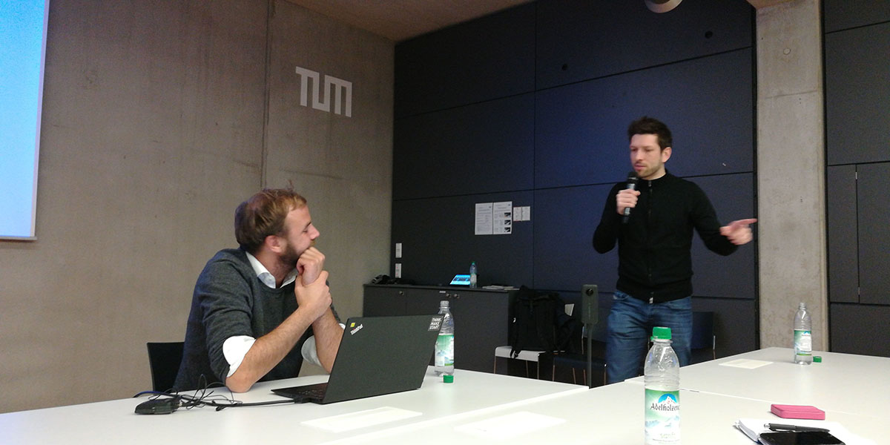

Yesterday evening, I did an impromptu talk about bootstrapping a Tech startup without having a Tech cofounder, at the Technical University Munich‘s startup accelerator EntrepreneurTUM (quite renowned university, where the German Hyperloop project (WARR) that won the SpaceX’ competition was built. I saw the early mockups 😍 🤓).
Lots of people wanted my inputs at the end. A few said I inspired them – during the event and some reaching out afterwards.
Call it a mid-life crisis of sorts, but I have come lately to the conclusion that the purpose of (my) life is to help propel future generations forward. We all stand on the shoulders of giants (the generations that preceded us) and we should be the shoulders for the next ones.
Even if we are just small shoulders (or for a small fraction of people) 🤷🏻♂
Paying it forward, is generally the term used. Paying with your time. Paying with your experience and knowledge.
It’s what Techstars‘ mentorship program’s mantra #givefirst is all about – embodied by its charismatic MD Johann Romefort.
I’m thankful to Philip Schneider for inviting me to talk and being a great host!
“I really liked to hear you tonight and you gave me a lot of inspiration to change my career.”
Feels good to help 🤗
So that’s why I’m doing it 😁